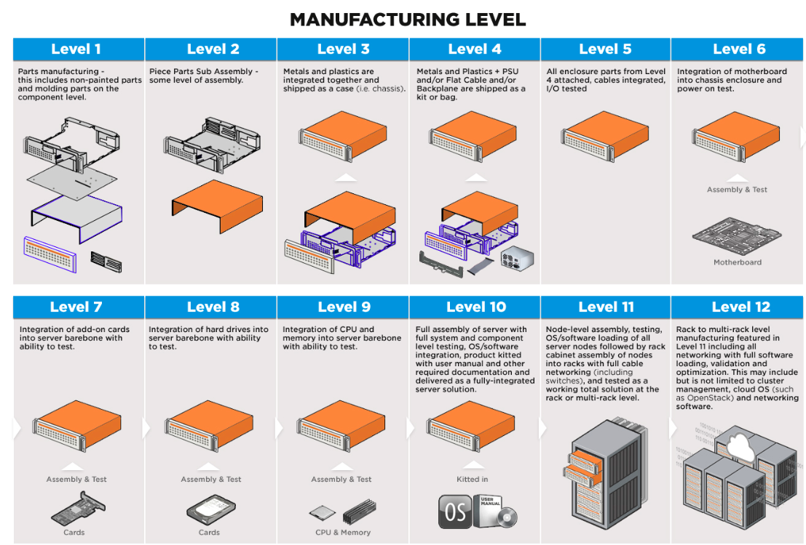

Manufacturing Level

- Level 1: Parts manufacturing—this includes non-painted parts and molding parts on the component level.
- Level 2: Piece Parts Sub Assembly—some level of assembly.
- Level 3: Metals and plastics are integrated together and shipped as a case (i.e. chassis).
- Level 4: Metals and Plastics + PSU and/or Flat Cable and/or Backplane are shipped as a kit or bag.
- Level 5: All enclosure parts from Level 4 attached, cables integrated, I/O tested
- Level 6: Integration of motherboard into chassis enclosure and power on test.
- Level 6 manufactured platforms are what ODMs provide when they ship out “server barebones” which are integrated motherboard/chassis combinations with parts included, but missing components such as CPU, memory, hard drives, networking cards, etc. Often systems integrators will buy these barebones and populate with components to create specific server configurations. How much value that integrator can add in terms of services and further building out the solution depends on their capabilities in the next levels:
- Level 7: Integration of add-on cards into server barebone with ability to test.
- Level 8: Integration of hard drives into server barebone with ability to test.
- Level 9: Integration of CPU and memory into server barebone with ability to test.
- Level 10: Full assembly of server with full system and component level testing, OS/software integration, product kitted with user manual and other required documentation and delivered as a fully-integrated server solution. A manufacturer capable of up to Level 10 manufacturing will deliver a working server solution. But if you need multiple servers networked together as a rack-level or even multi-rack level solution, you will need at least a Level 11 manufacturer (like AMAX):
Level 11: Node-level assembly, testing, OS/software loading of all server nodes followed by rack cabinet assembly of nodes into racks with full cable networking (including switches), and tested as a working total solution at the rack or multi-rack level.
- Level 12: Rack to multi-rack level manufacturing featured in Level 11 including all networking with full software loading, validation and optimization. This may include but is not limited to cluster management, cloud OS (such as OpenStack) and networking software.
Phase- EVT, DVT, PVT, MP
Engineering validation test
The EVT build is the first time you combine looks-like and works-like into one form factor, with production intent materials and manufacturing processes.
Design Validation Test
The DVT build is supposed to be one configuration of your production-worthy design, made of components from production processes (and hard tools) and on a line following production procedures. I believe very few companies actually stick to this requirement — because even if miraculously there are no outstanding issues, there may be parallel efforts to cut cost or increase yields that create additional configurations to build.
If you do have functional, performance, or reliability issues that are driving Plan B and Plan C configurations at this stage, it can be costly because each of those alternates needs to be built in “full quantity” to ensure that design can be fully mass-production qualified by the end of the build. I believe that’s the real test for whether you are at DVT or not: if you are running side configurations of 20 units, you are fooling yourself, and should call it EVT2.
Production Validation Test
PVT is the “last build” — the units you are building are supposedly intended to be sold to customers, if they pass all of your test stations. PVT typically transitions directly into Ramp and Mass Production, or a Pilot build with no time gap.
Mass Production
PVT flows immediately into the phase of the program called Ramp, where parallel assembly lines are being brought up to increase daily output volume. Mass Production is a superset of Ramp and the sustaining production that follows.